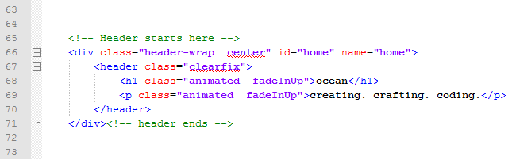
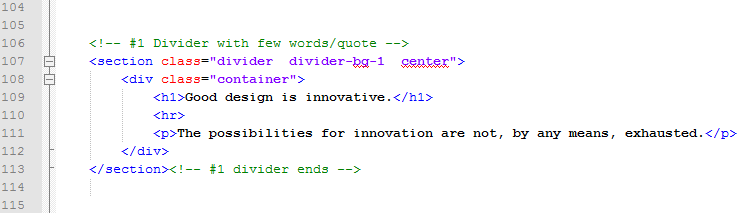
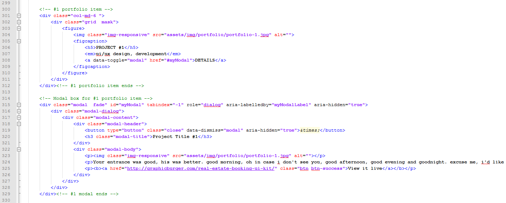
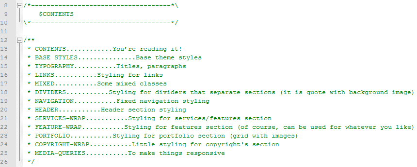

Created: 2014-02-27
By: Vaidas Lamanauskas
Email: vaidas.lamanauskas@gmail.com
Thank you for purchasing my theme. If you have any questions, please feel free to email me. Thanks so much!
Every different section of HTML is separated enough for easier look trough. It has start and finish.
There is #4 dividers in the theme which looks like this. You can easily add header and paragraph here. Every divider can have a different background image. You can change it in style.css file from line 246 - 252.
The portfolio items can be changed here. There is a part for thumbnail and the modal pop-up for it. In the modal you can describe youre work or/and add more images.
Every element that is changed from Bootstrap defaults can be found and overwritten in style.css file. There you can find "Contents" section at the top for ease of navigation. Animate.css file is for CSS animations and icomoon.css is for icons.
I've used the following images, icons or other files as listed.
Once again, thank you so much for purchasing this theme. As I said at the beginning, I'd be glad to help you if you have any questions relating to this theme. No guarantees, but I'll do my best to assist. If you have a more general question relating to the themes on WrapBootstrap, you might consider visiting their Knowledge base section.
Vaidas Lamanauskas